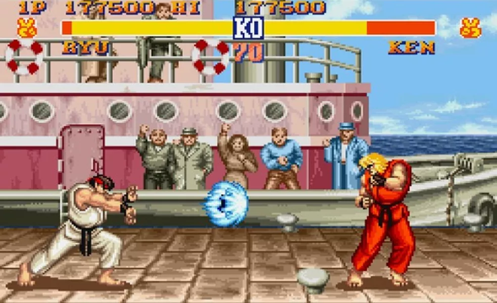

TOP 10 JOGOS RETRÔ
Tetris
Resident Evil 4
Street Fighter II
Pac-Man
Super Mario World
Team Fortress 2
Super Mario 64
Tibia
Final Fantasy VII
Ragnarok Online
Street Fighter II

Street Fighter II: The World Warrior (ストリートファイターⅡ -The World
Warrior- Sutorīto Faitā Tsū - The World Warrior?), também conhecido
simplesmente por Street Fighter II, é um jogo competitivo de videogame
desenvolvido pela Capcom e originalmente lançado para os sistemas de
Arcade em 1991. É o segundo jogo da série Street Fighter e a sequência
de Street Fighter, jogo lançado em 1987. Trata-se do décimo quarto
título da Capcom a utilizar a placa de sistema de Arcade CP System.
Street Fighter II melhorou vários dos conceitos introduzidos no
primeiro jogo, incluindo o uso de golpes especiais baseados em
comandos e uma configuração de Joystick com seis botões, enquanto
ofereceu aos jogadores uma seleção maior de personagens jogáveis, cada
um com seu próprio estilo de luta, e introduziu o sistema de Combos.
Street Fighter II se tornou o título mais vendido desde a era de ouro
dos jogos de Arcade. Em 1994, o jogo tinha sido jogado por mais de 25
milhões de pessoas somente nos Estados Unidos, em casa e nos Arcades.
Devido ao sucesso, uma série de versões atualizadas oferecendo
recursos e personagens adicionais foi lançada. Todas as versões de
Street Fighter II venderam mais de 200 mil gabinetes de Arcade e mais
de 15 milhões de unidades de Software por todo o mundo, e estima-se
que elas tenham lucrado mais de 10 bilhões de dólares em vendas
totais, fazendo do jogo um dos três jogos mais lucrativos de todos os
tempos até 2017, e o jogo de luta mais vendido até 2019. A versão de
Super Nintendo de Street Fighter II vendeu mais de 6.3 milhões de
cartuchos, fazendo dela o título mais vendido da Capcom pelas próximas
duas décadas e seu jogo mais vendido em uma só plataforma.
Street Fighter II é reconhecido como um dos melhores jogos eletrônicos
de sempre, e em particular o mais importante e influente jogo de luta
já criado. Seu lançamento é visto como um momento revolucionário no
seu gênero, e são creditados a ele a popularização de jogos de luta
durante os anos 90, incitando outros produtores a criarem as suas
próprias séries. Despoletou um renascimento dentro da indústria,
criando um enorme impacto nos jogos competitivos, na cultura popular
assim como música e filmes.